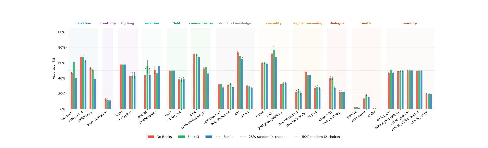
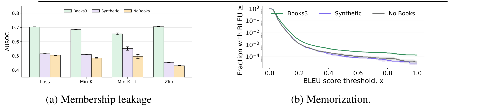

Does adding fiction to pretraining make a model a better storyteller, or does it also improve reasoning, dialogue, and general instruction following? Do contemporary novels, older public-domain books, and generated fiction provide the same value? This paper trains small models from scratch, holds the total token budget fixed, and replaces part of the data to investigate those questions. It also tests whether membership inference and extraction methods can still identify the original works.
This article reads Books, Copyright, and the Future of Foundation Models: An Empirical Study of Fiction in Pretraining, using the OpenReview manuscript. We use the 42-page revision dated November 19, 2026, retrieved on November 20. At that time it was an anonymous ICLR 2027 submission under review. We discuss the empirical effects of data choices and technical auditing. Descriptions of the corpora's copyright status follow the authors' characterization.
1. Topic: how pretraining mixtures shape capabilities
Pretraining repeatedly asks a model to predict the next token. The proportions of news, code, tutorials, and fiction change the vocabulary, syntax, knowledge, and discourse structures it encounters. Fiction often adds character relationships, coreference chains, dialogue, and developing plots. Researchers want to know whether these properties become capabilities that transfer to new tasks.
Comparing data sources requires controlling training volume, architecture, post-training, and evaluation. If a model reads more fiction and also trains much longer, attributing the gain becomes difficult. Writing adds another challenge. An automated judge's favorite story may differ from the one readers prefer.
2. Related work: data selection, synthetic text, and writing evaluation
| Work | Contribution | Connection to this paper |
|---|---|---|
| WebOrganizer | Organizes web data by topic and format and studies mixtures | Supplies labeled web data from which documents tagged as creative writing can be excluded |
| Institutional Books 1.0 | Curates public-domain digitized books from Harvard's collections with OCR post-processing | Supplies historical books for comparison with contemporary fiction |
| TinyStories | Studies language and narrative capabilities in small models using generated stories | Motivates testing the pretraining value of synthetic fiction |
| LitBench | Develops story preference data and writing evaluation models | Supplies automatic creative-writing scores whose agreement with people still needs checking on the current outputs |
This paper connects data-mixture experiments with provenance auditing. It asks both what a source contributes and whether auditing methods can recognize that upstream source after synthetic transformation.
3. Research questions: where does fiction provide value?
We organize the paper's experiments into three questions.
- Which capabilities change when fiction replaces a small share of web tokens? Evaluate base models and models with matched post-training on writing and general tasks separately.
- What explains differences between contemporary and historical public-domain fiction? Examine style, age, layout noise, and discourse features while accounting for the multiple differences between sources.
- How much utility survives synthetic generation, and which audit signals change? Include generation without book inputs and compare automated judgments with actual readers.
4. Method: fix the training recipe and replace the data
Step 1. Build mixtures with equal token budgets
The authors remove WebOrganizer documents labeled Creative Writing and draw nested web subsets. NoBooks is this filtered control. Its name does not establish that every possible fiction fragment has been detected. Fiction is selected from Books3 and Institutional Books. Manual checks of 100 classifier-labeled books from each source find approximate precision of 90% and 88%, respectively.
| Training condition | Web tokens | Fiction tokens | Total |
|---|---|---|---|
| NoBooks | 185B | 0 | 185B |
| Books3 | 180B | Contemporary fiction 5B | 185B |
| Institutional Books | 180B | Historical public-domain fiction 5B | 185B |
| Mixed books | 175B | 5B from each source | 185B |
| Synthetic | 180B | Fiction generated with Books3 conditioning 5B | 185B |
| Unconditioned Synthetic | 180B | Fiction generated without Books3 inputs 5B | 185B |
The replaced share, 5B / 185B, is approximately 2.7%. The primary comparison uses the first three conditions. The mixed and synthetic conditions provide further analysis. Section 2 and Appendices D and H

Step 2. Match pretraining and post-training
All models have approximately 1B parameters, with an architecture close to Llama-3.2-1B, and are trained from scratch with GPT-NeoX. Pretraining uses approximately , with 4,096-token sequences. The four core conditions, NoBooks, Books3, Institutional Books, and Synthetic, have three training seeds each. Identical SFT and DPO recipes reduce variation from post-training.
. The additional unconditioned synthetic condition has one seed. The fixed sequence length also bounds the conclusions. These experiments leave the value of full books for long-context extension open. Section 2 and Appendices E and H
Step 3. Generate synthetic fiction conditioned on real books
The pipeline removes the first 1,000 words and approximately the last 5% of each book, then splits the remainder into pseudo-chapters of about 1,500 words. Llama-3.1-8B-Instruct receives the title and excerpts from different positions to generate a genre and plot summary. Gemma-3-12B-Instruct then uses the summary and a local excerpt to write a new chapter.
The authors generate approximately 6B tokens, remove chapters containing at least 50 consecutive words overlapping Books3, and sample 5B tokens for training. The synthetic data therefore retain information from the original books as generation conditions. The overlap filter covers verbatim matches at its selected threshold. The unconditioned comparison uses the same generator and similar sampling but omits Books3 content from its prompts. Section 4.1 and Appendices G–H
Step 4. Evaluate utility and detectability
Base models are tested on narrative, commonsense, mathematics, dialogue, and other tasks. Post-trained models are evaluated on general instruction following, creative writing, and non-creative writing. Claude Sonnet 4.6 judges the EQ-Bench writing comparisons, while LitBench uses a reward model. Non-creative writing covers six categories with 200 prompts each. The revision also adds blinded human comparisons.
Provenance tests target original Books3 text. Membership inference asks whether a passage resembles training data. Extraction supplies a prefix and measures how much original text the model can recover. For Synthetic, the original book is an upstream input to data generation, while the pretrained model actually sees generated chapters. This distinction shapes the interpretation of attack failures.
5. Experiments and results: the overall effect of the data mixture
Main comparison: contemporary fiction improves creative writing, with uneven effects elsewhere
The table selects the main comparisons from Table 1. Values are mean ± standard deviation over three seeds. Pairwise win rates above 50% favor the first model named in the column.
| Automatic evaluation | Books3 vs NoBooks | Institutional Books vs NoBooks | Books3 vs Institutional Books |
|---|---|---|---|
| AlpacaEval, general instructions | 43.5 ± 2.2% | 25.7 ± 2.1% | 68.1 ± 0.8% |
| WildBench, general instructions | 42.0 ± 1.7% | 21.0 ± 1.0% | 72.8 ± 2.0% |
| MT-Bench, general instructions | 46.0 ± 2.0% | 23.8 ± 3.0% | 73.8 ± 3.3% |
| EQ-Bench, creative writing | 78.6 ± 3.9% | 22.4 ± 5.0% | 91.1 ± 4.5% |
| Prometheus 2, overall non-creative writing | 46.8 ± 0.1% | 35.7 ± 1.1% | 61.1 ± 1.0% |
| GPTScore, non-creative writing | 43.3 ± 4.2% | 37.2 ± 2.4% | 57.0 ± 1.7% |
Source: Table 1, PDF page 5. These compare outputs from specific model pairs. A win rate on one benchmark does not measure accuracy across all tasks.
LitBench absolute scores are higher-is-better. NoBooks scores −3.16 ± 0.06, Books3 −2.92 ± 0.05, and Institutional Books −3.38 ± 0.08. Under this recipe, contemporary fiction improves creative writing, while its mean general-instruction win rates stay below 50%. It does not outperform NoBooks overall on non-creative writing. The historical public-domain condition performs worse in these main comparisons.

Observed gains concentrate in particular capabilities. These results do not establish a general reasoning benefit from fiction, and the Institutional Books result cannot be generalized to all public-domain books. Age, format, and genre change together between these sources. In a check of 100 historical-book snippets, 16% contain layout artifacts. The authors also identify distribution differences between historical prose and contemporary requests.
Mechanism analysis: which features distinguish fiction?
The authors represent narrative structure, coreference, dialogue, emotion, vocabulary, syntax, readability, and related properties through 62 features. L1 logistic regression selects features, then XGBoost distinguishes book text from non-book sources. Using all features, the two book-source classifiers achieve 97.3% and 99.1% accuracy.
Books3 is more strongly characterized by coreference, named entities, and lexical diversity. Historical text has more distinctive archaic vocabulary and punctuation. These findings describe source differences. Establishing that one feature causes writing gains would require training models while controlling other properties. Section 3.3 and Appendix C
Synthetic comparison: are original-book conditions necessary?
| Automatic evaluation against Books3 | Conditioned, three seeds | Unconditioned, one seed |
|---|---|---|
| AlpacaEval win rate | 53.0 ± 2.6% | 50.0% |
| EQ-Bench win rate | 79.7 ± 6.8% | 65.6% |
| Prometheus 2 overall win rate | 53.6 ± 3.1% | 49.1% |
| LitBench absolute score (↑) | −1.72 ± 0.23 | −1.74 |
Source: Table 3 and Table 8. LitBench reports absolute scores. The other rows report pairwise win rates.
Conditioned synthetic data perform strongly on automatic writing evaluations. Unconditioned synthetic data also provide substantial writing gains after post-training. Their LitBench scores are similar, while EQ-Bench prefers the conditioned model. On base-model LAMBADA, the unconditioned model is close to NoBooks and below Books3 and conditioned Synthetic. The value of conditioning therefore varies by capability and evaluator. The generator's own training data are unknown, leaving open whether it already inherited knowledge from fiction.
Human evaluation: do readers support the automatic synthetic advantage?
The revision evaluates 50 LitBench output pairs per comparison with two blinded annotators, allowing ties. Win rates below favor the first model in each row, count ties as half a win, and average the annotators.
| Comparison | Human win rate | Automatic win rate on the same subset | Human–automatic agreement |
|---|---|---|---|
| Books3 vs NoBooks | 59.0% | 64.0% | 46.5% |
| Conditioned Synthetic vs Books3 | 46.5% | 90.0% | 31.0% |
| Unconditioned Synthetic vs Books3 | 43.5% | 79.0% | 34.0% |
Source: Appendix J, Table 10. The automatic rates here use the human-study subset and should be interpreted separately from full-benchmark results.
Across 100 judgments for conditioned Synthetic versus Books3, Synthetic wins 35, loses 42, and ties 23. This study does not establish a clear human preference for the synthetic model. Its size also leaves strict equivalence unproven. Two annotations of the same prompt are correlated, so 100 judgments do not constitute 100 independent prompts. The gap between automatic preference and reader judgments is a central part of the evidence.
Provenance auditing: upstream use becomes harder to identify

Membership inference uses 1,000 Books3 source passages and 1,000 BookMIA nonmember passages, scored individually without aggregation to books. The revision uses an external nonmember set and reports lengths of 128, 256, and 512 tokens. At 512 tokens, Loss attack AUROC falls from 0.703 for Books3 to 0.515 for Synthetic, compared with 0.505 for NoBooks. Other tested attacks show a similar direction.
Extraction samples 100,000 passages of 100 tokens. Each model receives the first 50 tokens and generates the next 50, with five samples and the best BLEU retained per passage. The fraction reaching BLEU 0.75 is 2.27 × 10⁻⁴ for Books3, 6.33 × 10⁻⁵ for Synthetic, and 7.67 × 10⁻⁵ for NoBooks, evaluated across three seeds.
The tested attacks find it harder to identify or recover original Books3 text from the synthetic model. Weak detection signals cannot establish that upstream works were unused or settle legal questions about copyright. Section 4.2 and Appendix K
6. Our reflections
Topic: what is this area studying?
The paper makes data value measurable. Which abilities change when a portion of pretraining text is replaced? After a generation step, do utility and source traces change together? The value is task-dependent. Creative writing, instruction following, and reader preference each require their own evidence.
Limitations: what remains unresolved?
- Sources bundle several variables. Contemporary and historical fiction differ in age, OCR quality, genre, and selection errors, making it difficult to isolate why one source helps.
- Automatic scores diverge from human preference. Synthetic data's automatic advantage is much larger than its advantage in the small reader study. The unconditioned model also has only one seed.
- Scale and auditing coverage are limited. A 1B model, a fixed fiction proportion, and 4,096-token pretraining do not establish effects in industrial models or full-length novel generation. The attacks cover selected detectability signals.
Possible approaches: how could these questions be tested?
- Compare matched data. Control publication period, genre, and cleaning quality, then compare different organizations of the same content to test candidate factors such as coreference and discourse structure.
- Expand blinded evaluation and repeat synthetic experiments. Add seeds for unconditioned training, cluster uncertainty estimates by prompt, include different reader groups and longer stories, and release win, loss, and tie distributions.
- Record both generation provenance and behavioral evidence. Extend model scales and mixture proportions, retain source records for synthetic generation, and combine extraction, non-verbatim similarity, and membership inference to assess audit coverage.
Based on the OpenReview manuscript and its public discussion. Figures 1–3 come from the same revision, with surrounding prose, headers, and line numbers cropped out. Plot data and labels are preserved without redrawing. The authors were anonymous at retrieval and are credited as the submission authors under CC BY 4.0. The asset manifest records the revision date and PDF hash.